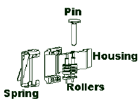

Replacing Universal Pinch Rollers
This procedure describes how to assemble and install universal pinch roller assemblies.
-
Assemble the left- or right-hand pinch roller assemblies.
Note:
- The parts in this kit can be assembled in two different ways, left-hand or right-hand.
- Always assemble the parts with the red marking upward, whether you are assembling a left-hand or right-hand assembly.
-
Determine whether a left-hand or right-hand pinch roller assembly is needed.
Figure 16: Right-hand pinch roller assembly 
- Place the black plastic housing on a flat surface.
-
Place the rollers in the housing with the red marks facing upward.
-
Slide the spring over the roller housing, with the red mark facing upward, until the spring snaps into place.
- Manually spin the rollers to verify smooth rotation.
- Insert the pivot pin into the housing with the red mark facing upward.
- Verify that the spring is attached securely (does not move easily from side to side).
-
Install the pinch roller assembly into the instrument.
- Hold the assembled mixer pinch roller assembly between your thumb and index finger and compress the spring.
- Lower the assembly into the wash carousel housing.
-
Move the pin around while pushing down, until the pin drops into the hole in the analytical module.
Note: The cap of the pivot pin is flush with the housing, when the pin is seated correctly.
-
After all the pinch roller assemblies are in position, install the wash arm actuator rod brackets onto the module.
Note: The bracket keeps the pinch roller assembly in position.
-
Adjust the pinch roller actuator brackets.
- Home the wash arm.
- Loosen the mounting screws on both of the pinch roller actuator guide brackets.
- Place a 0.050-in feeler gauge between the pinch roller actuator arm and the guide bracket.
- Push the bracket toward the wash carousel until snug, then tighten the bracket mounting screws.
- Disable the motors and push the wash arm down.
- Verify that the pinch roller actuator arms are free and allow the pinch rollers to deploy fully.
- Enable the motors and home the wash arm.
-
Verify that the pinch rollers function properly.
- Run the mixer exerciser.
-
Confirm that:
- the retracted pinch rollers do not bump the RVs when the rollers are moved into position.
- the pinch rollers deploy fully when the wash arm moves down.
- the RVs rotate smoothly during mixing.
- If you have any questions or concerns, contact your local support office.